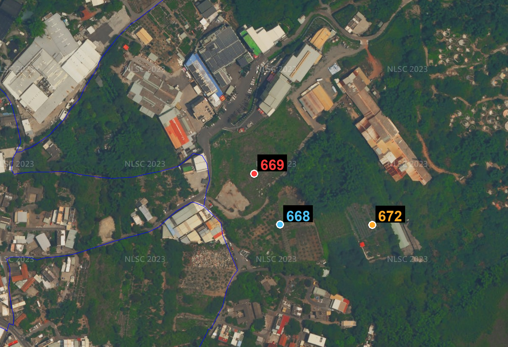
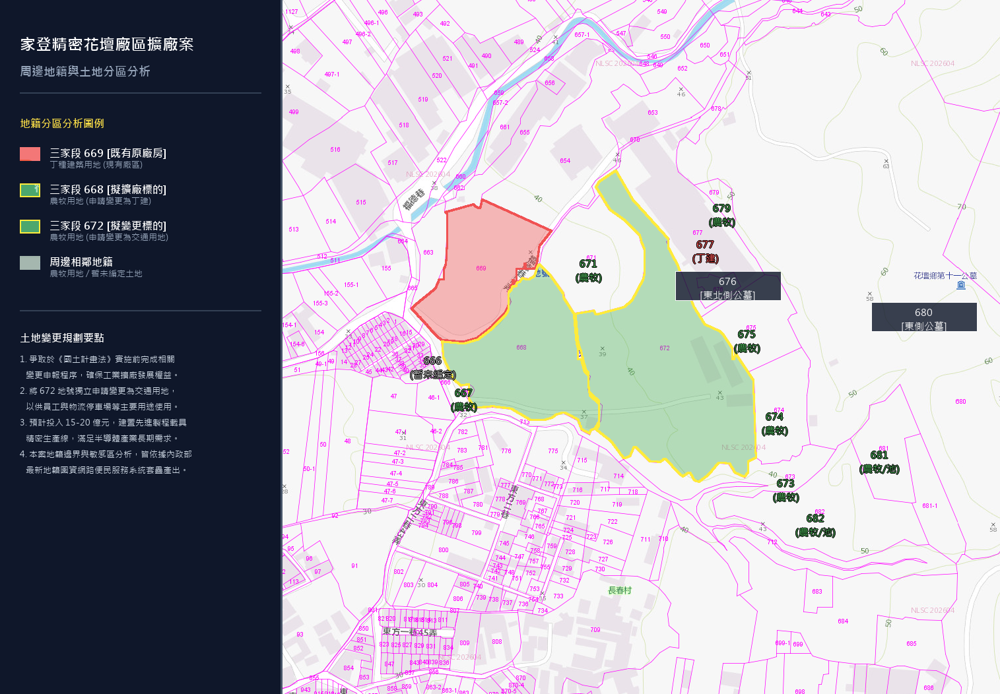

由 鴻昌環保科技有限公司 規劃
壹、計畫緣由與目的
配合全球半導體先進製程（3nm、2nm 及以下）產能擴張，本公司關鍵半導體傳載載具
（EUV Pod 光罩傳送盒、FOUP 晶圓傳送盒）產能已達高度滿載。為進行
產線異地備援並建置先進封裝載具（PLP Carrier）新事業生產基地，
需以既有花壇廠區為基礎進行毗連擴建。
- 以既有合法廠區（669 地號丁種建築用地）為核心，毗連擴展
- 引進低污染之高精密射出成型與無塵室潔淨裝配製程
- 共用既有公用設施，提升能源使用效率、減少重複投資
- 分期規劃土地變更，兼顧產能需求與土地使用合規
資料來源（公開資訊）：家登精密 114 年法人說明會（2nm 先進製程帶動 EUV Pod／FOUP 出貨達峰、產能滿載）；
家登精密官方新聞稿〈2024 營運寫新高〉及 MoneyDJ／鉅亨網等公開報導（海內外「異地備援」建廠布局）；
先進封裝載具（PLP／CoWoS 全系列）新事業客戶驗證進行中。
貳、申請人基本資料
1998
設立年（民國 87 年）
15億
資本總額（實收 9.6 億）
3680
上市公司股票代號
EUV Pod
極紫外光光罩傳送盒
FOUP
前開式晶圓傳送盒
精密射出
高精密全電式成型
無塵室製程
Class 10/100 潔淨裝配
參、申請基地概況
| 類別 | 地段地號 | 面積(㎡) | 面積(坪) | 使用分區 | 使用地類別 | 規劃用途 |
|---|---|---|---|---|---|---|
| 原有廠地 | 三家段 669 | 7,702.06 | 2,329.87 | 山坡地保育區 | 丁種建築用地 | 既有原廠房 |
| 新增(西) | 三家段 668 | 9,792.57 | 2,962.25 | 山坡地保育區 | 農牧用地 | 第一期變更 |
| 新增(東) | 三家段 672 | 19,424.84 | 5,876.01 | 山坡地保育區 | 農牧用地 | 第二期變更 |
| 變更合計 | 668、672 | 29,217.41 | 8,838.26 | — | — | 約 2.92 公頃 |
| 原廠＋新增 | 668、669、672 | 36,919.47 | 11,168.13 | — | — | 約 3.69 公頃 |

航照圖（以三家段 669 地號為中心）｜資料來源：國土測繪中心正射影像
三筆土地均為家登精密自有，免附變更編定同意書。
● 669 原廠（中心）、● 668 第一期、● 672 第二期。
三筆間雖隔有既有道路，惟依《毗連審查辦法》第 4 條，相隔道路（或水路）寬度合併計算未逾 10 公尺者仍認定為毗連，本案據以辦理。
● 669 原廠（中心）、● 668 第一期、● 672 第二期。
三筆間雖隔有既有道路，惟依《毗連審查辦法》第 4 條，相隔道路（或水路）寬度合併計算未逾 10 公尺者仍認定為毗連，本案據以辦理。
肆、鄰近土地使用現況分析

三家段 668、672 地號地籍分區色碼分析圖
- 🟥 丁種建築用地：669 原廠、677
- 🟩 農牧用地：周邊 667、671、673~675、679、681、682 等
- 🟨 變更標的：668、672
周邊多為農牧用地，廠區排水須採灌排實質分流；
並沿基地外圍規劃留設遮蔽型隔離綠帶。
伍、法規依據架構
毗連審查辦法
興辦工業人使用毗連非都市土地擴展計畫申請審查辦法（第4、5條核心門檻）
非都市土地
使用管制規則
使用管制規則
第 27、28、31、49-1、54 條：變更編定依據與山坡地審查
水土保持法
與水利法
與水利法
山坡地水保計畫、2 公頃以上出流管制計畫
環評與
環境敏感地
環境敏感地
山坡地 1 公頃環評門檻、62 項環境敏感地查詢
另涉產業創新條例第 65、66 條（回饋金與計畫管制）、區域計畫法、
工廠管理輔導法，並依彰化縣地方規費與審查實務辦理。
陸、分期開發規劃
第一期 ── 668 地號
毗連丁種建築用地變更
面積 9,792.57 ㎡（約 0.98 公頃）
供生產線擴建，與 669 原廠房無縫連線
面積 9,792.57 ㎡（約 0.98 公頃）
供生產線擴建，與 669 原廠房無縫連線
第二期 ── 672 地號
毗連丁種建築用地變更
面積 19,424.84 ㎡（約 1.94 公頃）
供後續產能擴建與廠區整體布局
面積 19,424.84 ㎡（約 1.94 公頃）
供後續產能擴建與廠區整體布局
以既有 669 原廠為基礎，分第一期（668）、第二期（672）循序辦理毗連非都市土地
變更編定，逐期擴建，並符合毗連審查辦法「申請以二次為限」之規定。
柒、面積與比例合規性
依毗連審查辦法第 5 條：申請變更面積原則不得超過原廠土地總面積 1.5 倍，且申請以 2 次為限。
✕ 一次送審
- 變更 29,217.41 ㎡ ÷ 原廠 7,702.06 ㎡ ＝ 約 3.79 倍
- 遠超 1.5 倍上限
- 直接退件
✓ 分期送審
- 第一期 668：÷ 669 原廠 ＝ 1.27 倍 ✓
- 完工合併後原廠增至 17,494.63 ㎡
- 第二期 672：÷ 17,494.63 ＝ 1.11 倍 ✓
- 累計 2 次，符合「以二次為限」
捌、土地使用強度與配置
建蔽率
上限 70%
容積率
上限 300%
綠地
變更面積 10%
變更為國土保安用地
變更為國土保安用地
隔離綠帶
變更面積 30%
帶狀遮蔽喬木綠帶
帶狀遮蔽喬木綠帶
沿基地外圍（特別是東南側鄰農地）留設帶狀隔離綠帶，
擋土牆退縮地界、圍籬採透空設計，種植遮蔽喬木，
兼顧景觀隔離與鄰地農業生產環境維護。
玖、環境影響與灌排分流
雨水與山坡地逕流
建議
周邊設截沙溝與雨水收集管，導引山坡地雨水繞行廠區，
經滯洪沉砂池處理後排入既有天然排洪溝渠，絕不流入鄰近農田。
製程廢水與生活污水
建議
經廠內自建廢水處理站（中和＋沉澱＋多介質過濾＋RO 回收）處理至符合
放流水標準後以專管外排，嚴禁排入灌溉渠道。
彰化為農業大縣，依地方審查實務嚴格要求廢污水與農業灌溉排水系統實質分流；
本案以灌排分流設計確保不影響鄰近農業生產環境。
拾、山坡地保育與環境敏感
水土保持計畫
委託技師編製水保計畫書，送彰化縣水利資源處核定
生態滯洪沉砂池
配置地下式生態滯洪沉砂池，落實出流管制
環境敏感地查詢
完成 62 項一、二級環境敏感地區聯合查詢
山坡地保育
整地遵守挖填平衡；非屬特定農業區、非活動斷層敏感區
本案位於山坡地保育區，兩期面積累計逾 1 公頃，依法觸發山坡地環評門檻；
將依規定辦理環境影響評估與水土保持審查程序。
拾壹、分期開發預定時程（可模擬調整）
以 民國 115 年 7 月為起點；須先取得原廠工廠登記證、再經環評通過，始得辦理第一期變更（全程串接，不併行）。拖動各階段下方調整桿改變月數，整體時程自動順延 ▾
原廠須先取得工廠登記證方具毗連擴廠資格；因山坡地逾 1 公頃，第一、二期各須先完成環評；第二期須俟
第一期完成建設並取得工廠登記證後始得申請。全程必須於國土計畫法上路（D-day · 民國 120 年）前完成——調整各階段月數即顯示整體是否衝破 D-day。
拾貳、關鍵挑戰 ── 純丁建分期的潛在死結
若第二期 672 仍循「毗連丁建變更」辦理，將面臨三重相互卡鎖的風險：
時程瀑布
原廠工登→一期變更→一期建廠→二期環評聯審→二期建廠，累計恐達 8～11 年
國土計畫法大限
區域計畫法廢止後，非都市土地變更編定路徑將永久關閉
交通衝擊硬傷
聯外僅福德巷且與鄰廠共用，TIA（交通影響評估）恐降至 LOS E/F（服務水準 E/F 級），受地形產權限制難以拓寬
環評門檻
二期面積逾 1 公頃，必走環評，行政審查再添 30～36 個月
三項風險疊加下，「兩期皆變更為丁建」的傳統做法，在時程與國土法大限的夾擊中極可能無法如期完成。
拾參、我們採取的破局方案
第一案 ── 668 丁建變更
- 於 669 原廠申辦建造、建廠之同時，即同步展開 668 毗連丁建變更之環境影響說明書撰寫；俟取得工廠登記證後，立即送交環說審查，以爭取時效
- 668 單案 9,792.57 ㎡ 雖未達 1 公頃，惟依現行彰化縣環評規定，開發累積面積達 1 公頃即須辦理環評，故環評無法免除、須一併納入時程
- 面積佔原廠 669 之 1.27 倍，符合《毗連辦法》1.5 倍上限
- 搶在國土計畫功能分區圖公告（D-day）前完成使用地變更登記
- 成果：669＋668 合併後丁種建築用地達 17,494.63 ㎡
第二案 ── 672 改交通用地
- 672（1.94 公頃）若仍變更丁建，受第一案建廠取得新工登之前置鎖定，國土法公告前絕對來不及
- 改申請交通用地（路外停車場）：規劃大型員工停車場、大客車接駁轉運站與物流裝卸車位
- 與生產區在土地權屬上功能區隔，承接擴廠後龐大車流，使整體配置合理化
- 不涉工業生產，無製程污染，審查路徑單純、可與第一案並行推進
避 1.5 倍限制
交通用地依《非都市土地使用管制規則》相關條款辦理，不受《毗連辦法》第 5 條原廠 1.5 倍面積限制，可直接合法過關。
解交通卡關（最關鍵）
669＋668 投產引入大量車流，福德巷既有路寬無法負荷、TIA（交通影響評估）必被退；672 作專屬停車接駁基地，是最實質的交通改善對策，足以說服交通局與環評委員放行第一案。
審查快、門檻低
交通用地無製程廢水與空氣污染負荷，其環評、水保、出流管制之難度與速度遠快於丁建，可與第一案並行送審。
實績背書
本團隊具豐富路外停車場／交通用地變更通過實績（鏹盟、指南、德旺、圭棗等），熟稔交通影響評估與出入口規劃。
拾肆、建議方案預定時程 ── 兩案並行（可模擬調整）
第一案 668 依法循序辦理（原廠工登→環說→計畫書送審水保→核發毗連→廠房興建），與第 12 頁第一期一致；第二案 672 改交通用地、審查路徑單純，可與第一案並行加速。拖動調整桿即時模擬 ▾
務實循序估計下，第一案 668 丁建之變更編定恐逼近／超過國土法 D-day（民國 120 年）；故第二案 672 改交通用地、與第一案並行為爭取整體時效之關鍵——不涉製程污染、審查快，並同步化解 669＋668 投產之交通衝擊（TIA）卡關。